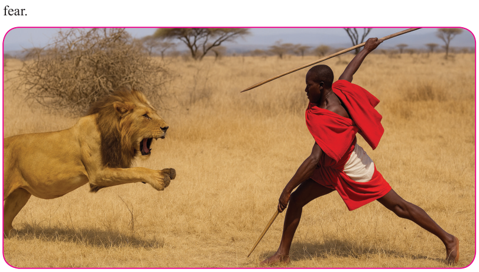

Form Two
Tanzania Institute of Education (TIE)
Bible Knowledge
64
The importance of bravery
Bravery is a mental or moral strength to face danger and difficult situation with confidence and determination. It requires endurance because it requires persistence and perseverance. Sometimes bravery means being the person who stands out in the crowd, who speaks up, and who must be a voice, either the voice they need to hear, or a voice for others (Joshua 24:15). Occasionally, bravery means having prudence to pause, to sit in silence, and to be resilient. Furthermore, it means putting up the fight of your life, and fighting till the very end. Besides, it means raising up that white flag, accepting defeat, and find the will to move on from that defeat without anger, and with wisdom (Joshua 7:3).
Sometimes bravery means to be grateful, contented, and satisfied with the state of your present conditions. But bravery which is an act of courage must also be an act of love and compassion. To be brave, you must accept that the great love of anything may result in heartbreak, and pain and disappointment. To be brave, you must be willing to risk the possibility of a terrifying ending. To be brave is to be alive and to live in such a way that the world knows you are afraid but you love more than you fear.

Figure 5.1: Bravery sometimes is taking a risk for the higher good.
Bravery can be physical like rescuing someone from danger, or moral, like standing up for your idea in the face of opposition. In a biblical sense, bravery is relying on God’s power and promises, even when facing seemingly impossible challenges.
Bravery is important in both secular and religious realms. It is important for leaders and citizens, and for each individual. The importance of bravery can be summarized in the following points: